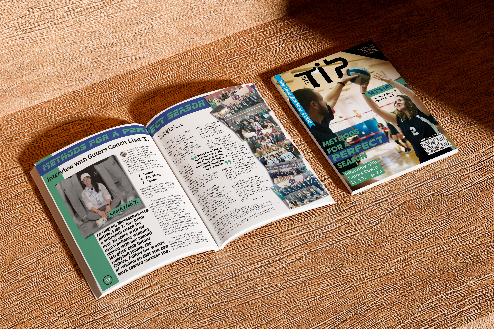
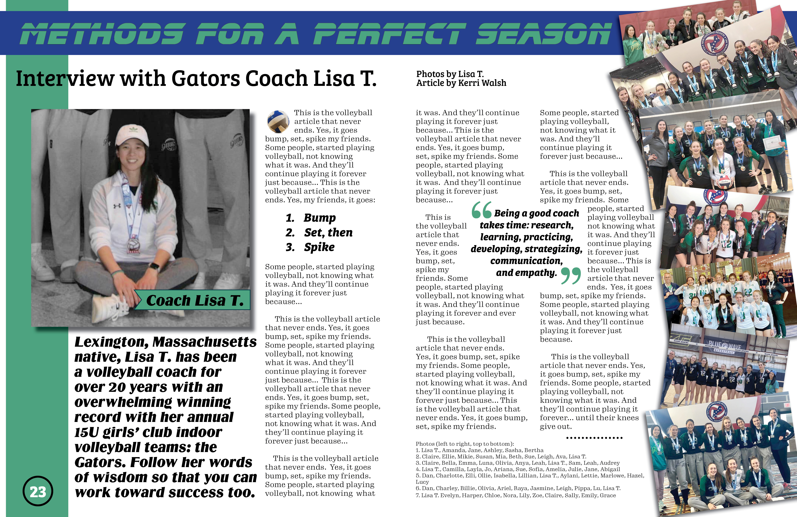
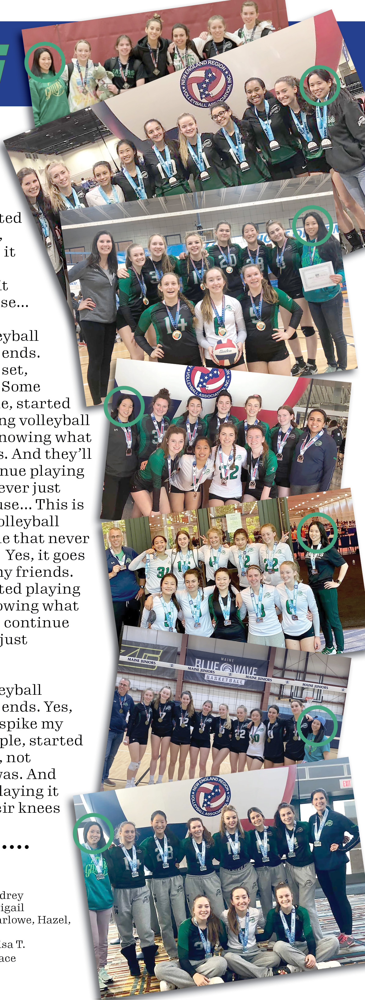
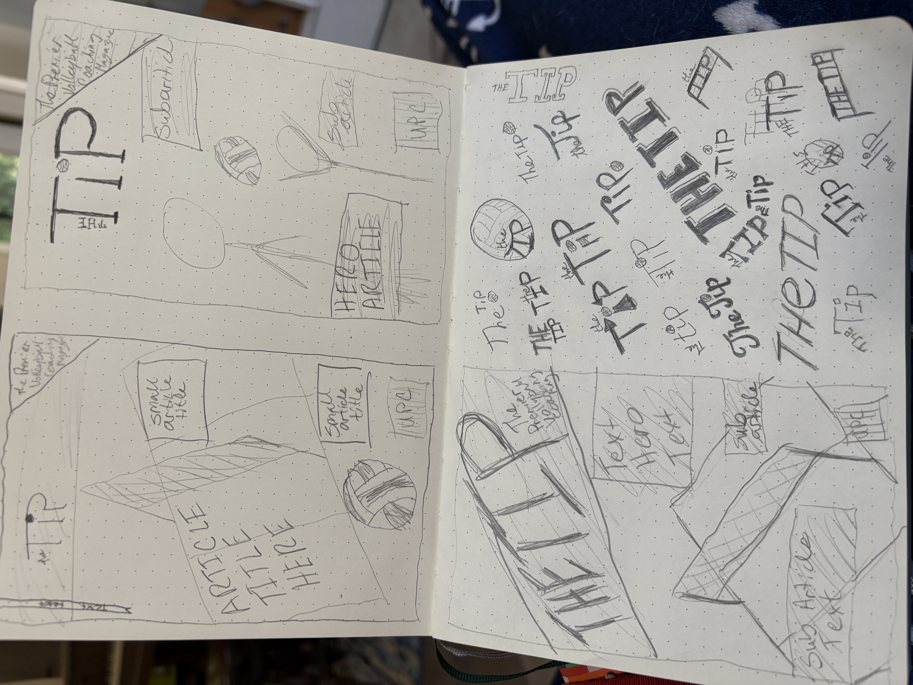
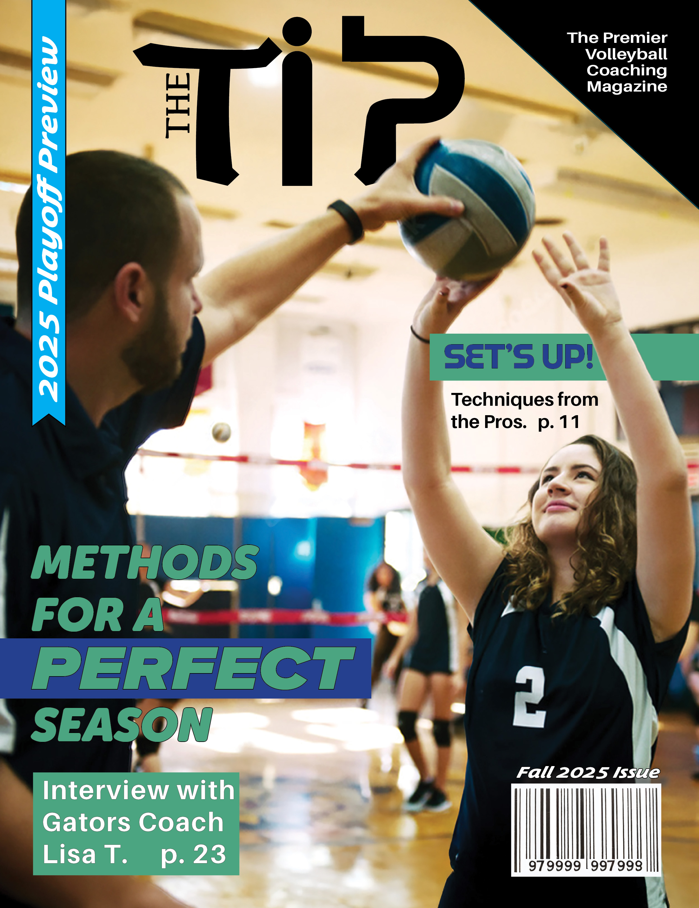

SOFTWARE
InDesign
Adobe Photoshop
Envato (subscription)
ROLE
Editorial Designer
Publication Designer
Layout Designer
DELIVERABLES
Publication Identity
Magazine Cover Design
Editorial Layout
Feature Article Spread
Photography Integration
TOOLS & CREDITS
Photography provided by Lisa T. (used with permission)
Envato Elements (licensed subscription assets & mockups)
PROJECT OVERVIEW
The Tip is a fictional premier volleyball magazine publication created to celebrate the strategy, leadership, and dedication behind competitive volleyball. Designed for coaches, players, and volleyball enthusiasts, the publication explores the stories, techniques, and people who shape the sport.
This project focused on developing a complete editorial identity through magazine cover design, feature article layout, photography integration, and visual storytelling. Using provided photography from volleyball coach Lisa T., the goal was to transform a coaching profile into an engaging publication experience that balances athletic energy with professional editorial structure.
DESIGN APPROACH
The visual direction combines bold athletic typography, structured layouts, and dynamic photography to create a publication that feels competitive, modern, and informative. The cover establishes a clear hierarchy through feature headlines, issue information, and supporting content, while the interior spread uses grid structure, imagery, pull quotes, and typography to guide readers through the feature story.
The project explores the complete editorial design process, including concept sketches, layout development, photography selection, and final magazine applications.

Two-page editorial spread highlighting the feature story on volleyball coach Lisa T. The layout combines photography, article structure, pull quotes, typography, and supporting team imagery to create an engaging reader experience.

Photography exploration featuring Lisa T. and the championship volleyball teams highlighted within the article. The selected images support the storytelling by emphasizing leadership, team success, and the human perspective behind competitive volleyball.

Early cover explorations examining composition, typography hierarchy, feature placement, and publication identity. These sketches demonstrate the development process used to refine the final magazine cover direction.

Completed magazine cover design establishing The Tip brand identity through athletic typography, feature headlines, issue information, and photography-driven composition.